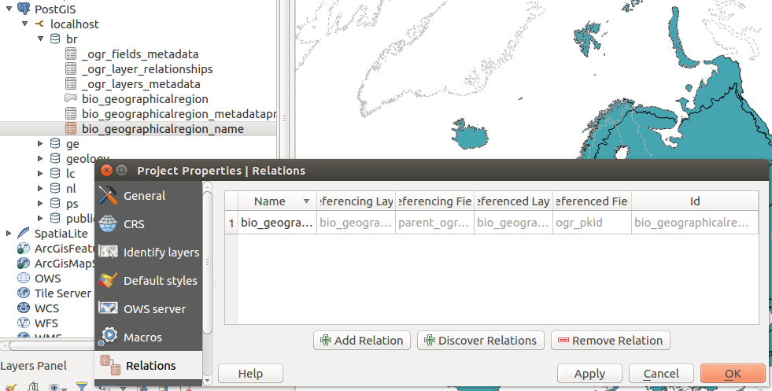
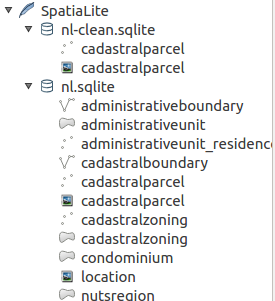
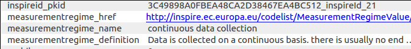

Consumption and use of GML complex features like INSPIRE harmonised data (vector), GeoSciML within QGIS¶
INSPIRE use cases¶
Setting up the virtual box with QGIS3 & GML Application Schema toolbox plugin
Create INSPIRE datasets
See all videos on this channel.
Testing QGIS¶
Relationship between tables discovery¶
When spatial and attribute tables are added to a QGIS project, the user can automatically setup relations between tables based on the database foreign key analysis. Open the project properties, relations tab and select the discover relation actions. The database is analyzed and user can select which relations to enable in the current project.

Testing GDAL¶
How-to?¶
How-to check GMLAS driver is available in GDAL?¶
gdalinfo --format GMLAS
How-to list GML file feature types?¶
ogrinfo -ro GMLAS:cddaDesignatedArea.gml
INFO: Open of `GMLAS:cddaDesignatedArea.gml'
using driver `GMLAS' successful.
1: DesignatedArea (Unknown (any), Point)
2: DesignatedArea_metaDataProperty (None)
3: DesignatedArea_name (None)
4: DesignatedArea_legalFoundationDocument_CI_Citation_alternateTitle (None)
5: DesignatedArea_legalFoundationDocument_CI_Citation_date (None)
6: DesignatedArea_legalFoundationDocument_CI_Citation_identifier (None)
7: DesignatedArea_legalFoundationDocument_CI_Citation_citedResponsibleParty (None)
...
How-to display GML file content?¶
ogrinfo -ro -al GMLAS:cddaDesignatedArea.gml
How-to display layer metadata?¶
ogrinfo -ro -al GMLAS:cddaDesignatedArea.gml \
-oo EXPOSE_METADATA_LAYERS=YES
How-to convert from GML to spatialite?¶
ogr2ogr cdda.sqlite GMLAS:cddaDesignatedArea.gml \
-f sqlite -dsco spatialite=yes -oo EXPOSE_METADATA_LAYERS=YES
How-to convert from GML to PostGIS?¶
ogr2ogr PG:'host=localhost user=qgis password=qgis dbname=inspire' GMLAS:cddaDesignatedArea.gml \
-f PostgreSQL -dsco spatialite=yes -oo EXPOSE_METADATA_LAYERS=YES
How-to convert from spatialite or PostGIS to GML?¶
ogr2ogr -f GMLAS br.gml br.sqlite
OGR use the _ogr_other_metadata table to check which schema should be used to generate the output document.
If the schema can not be found, the following message is returned:
ERROR 1: No schema locations found when analyzing data file: XSD open option must be provided
In such case use the INPUT_XSD dataset creation options to customize the schema:
ogr2ogr -f GMLAS rtn.gml -dsco INPUT_XSD=xsd/RoadTransportNetwork.xsd rtn.sqlite
How-to build database from XSD?¶
# List schema entities
ogrinfo GMLAS: -oo XSD=http://inspire.ec.europa.eu/schemas/hy-n/4.0/HydroNetwork.xsd
Had to open data source read-only.
INFO: Open of `GMLAS:'
using driver `GMLAS' successful.
1: HydroNode (Point)
2: HydroNode_metaDataProperty (None)
3: HydroNode_name (None)
4: HydroNode_inNetwork (None)
5: HydroNode_spokeEnd (None)
# Create sqlite database from schema
ogr2ogr ps_db.sqlite GMLAS: \
-f sqlite -dsco SPATIALITE=YES \
-oo XSD=http://inspire.ec.europa.eu/schemas/ps/4.0/ProtectedSites.xsd
# Create PostGIS database from schema
ogr2ogr PG:'host=localhost user=qgis password=qgis dbname=inspire' GMLAS: \
-f PostgreSQL \
-oo XSD=http://inspire.ec.europa.eu/schemas/ef/4.0/EnvironmentalMonitoringFacilities.xsd \
-nlt CONVERT_TO_LINEAR \
-lco SCHEMA=poc_gwml2_inspire \
-lco OVERWRITE=YES
How-to append dataset from different areas?¶
Use -append option.
How-to deal with non spatial tables?¶
Use -append -doo LIST_ALL_TABLES=YES options.
How-to deal with nullable?¶
ERROR 1: sqlite3_step() failed:
NOT NULL constraint failed: designatedarea.identifier_codespace (19)
Use -forceNullable option to remove NOT NULL constraints.
How-to remove empty tables or attributes?¶
In some cases, the GML may contains only a subset of elements described in the XSD. 2 options allow to cleanup the database after processing of all GML file content:
RemoveUnusedLayers
RemoveUnusedFields

How-to convert from GML to spatialite using python?¶
from osgeo import gdal
src_ds = gdal.OpenEx( 'GMLAS:cddaDesignatedArea.gml', \
open_options = ['EXPOSE_METADATA_LAYERS=YES'])
gdal.VectorTranslate('gmlas_test1.sqlite', \
src_ds, \
format = 'SQLite', \
datasetCreationOptions = ['SPATIALITE=YES'] )
How-to resolve INSPIRE codelist using Registry ?¶
By default, no XLink resolution is made.
ogrinfo GMLAS:inspire/PS/cddaDesignatedArea.gml DesignatedArea_siteDesignation
OGRFeature(DesignatedArea_siteDesignation):174
ogr_pkid (String) = CDDA_DESIGNATEDAREA_70584b91-6434-4762-9bc1-a78ebb25412a_siteDesignation_174
parent_id (String) = CDDA_DESIGNATEDAREA_70584b91-6434-4762-9bc1-a78ebb25412a
nilReason (String) = (null)
DesignationType_designationScheme_owns (Integer(Boolean)) = 0
DesignationType_designationScheme_href (String) = http://inspire.ec.europa.eu/codelist/DesignationSchemeValue/IUCN
To enable XLink resolution and collect information in the remote document, add a CONFIG_FILE option (eg. -oo CONFIG_FILE=~/qgisgmlas/qgis-ogr-gmlas/gmlasconf-inspire.xml and turn on XLink resolution. In the INSPIRE context, codelist elements are described in more details in the Registry (http://inspire.ec.europa.eu/codelist/). The following example shows how to collect the codelist name and definition based on the Registry API:
<XLinkResolution>
<URLSpecificResolution>
<URLPrefix>http://inspire.ec.europa.eu/codelist</URLPrefix>
<HTTPHeader>
<Name>Accept</Name>
<Value>application/x-iso19135+xml</Value>
</HTTPHeader>
<HTTPHeader>
<Name>Accept-Language</Name>
<Value>en</Value>
</HTTPHeader>
<AllowRemoteDownload>true</AllowRemoteDownload>
<ResolutionMode>FieldsFromXPath</ResolutionMode>
<ResolutionDepth>1</ResolutionDepth>
<CacheResults>true</CacheResults>
<Field>
<Name>name</Name>
<Type>string</Type>
<XPath>RE_RegisterItem/name/gco:CharacterString</XPath>
</Field>
<Field>
<Name>definition</Name>
<Type>string</Type>
<XPath>RE_RegisterItem/definition/gco:CharacterString</XPath>
</Field>
</URLSpecificResolution>
To execute the conversion with a custom CONFIG_FILE use:
ogrinfo GMLAS:inspire/PS/cddaDesignatedArea.gml DesignatedArea_siteDesignation -oo CONFIG_FILE=~/qgisgmlas/qgis-ogr-gmlas/gmlasconf-inspire.xml
OGRFeature(DesignatedArea_siteDesignation):174
ogr_pkid (String) = CDBCBACC5B6ED965FF611A1D7C8B51CA_DesignatedArea_102_siteDesignation_174
parent_ogr_pkid (String) = CDBCBACC5B6ED965FF611A1D7C8B51CA_DesignatedArea_102
nilReason (String) = (null)
DesignationType_designationScheme_owns (Integer(Boolean)) = 0
DesignationType_designationScheme_href (String) = http://inspire.ec.europa.eu/codelist/DesignationSchemeValue/IUCN
DesignationType_designationScheme_name (String) = IUCN
DesignationType_designationScheme_definition (String) = The Protected Site has a classification using the International Union for Conservation of Nature classification scheme.
The feature #174 has now 2 custom attributes populated from the registry:
DesignationType_designationScheme_name
DesignationType_designationScheme_definition

How-to deal with long table/column names?¶
Some target datasources may constraint on the length of table or column names (eg. 64 for Postgres).
In this case the option IdentifierMaxLength is available to limit the size of feature names and column names.
<IdentifierMaxLength>60</IdentifierMaxLength>

FAQ¶
Use CONVERT_TO_LINEAR to fix error on create geometry¶
Example:
Curve type not supported in spatialite
ERROR 6: Cannot create geometry field of type CURVE
Mix of geometry type
Warning 1: Geometry to be inserted is of type Multi Polygon, whereas the layer geometry type is Multi Surface.
Add the -nlt CONVERT_TO_LINEAR option to fix those types of errors.
Error ‘gml:AbstractCRS’ not found¶
File
> "/home/qgis/.qgis3/python/plugins/gml_application_schema_toolbox/gui/import_
> gmlas_panel.py", line 162, in gmlas_datasource
> 'EXPOSE_METADATA_LAYERS=YES'])
> File "/usr/lib/python3/dist-packages/osgeo/gdal.py", line 2992, in OpenEx
> return _gdal.OpenEx(*args, **kwargs)
> RuntimeError: /vsicurl_streaming/
> http://schemas.opengis.net/iso/19139/20070417/gsr/spatialReferencing.xsd:19:
> 39 referenced element 'gml:AbstractCRS' not found
> http://geoserv.weichand.de:8080/geoserver/wfs?request=GetFeature&count=10&ty
> penames=bvv%3Abayern_ex&service=WFS&version=2.0.0
This is usually related to the same XSD imported using 2 differents URL. eg.
<xsd:import namespace="http://www.opengis.net/gml/3.2"
schemaLocation="http://geoserv.weichand.de:8080/geoserver/schemas/gml/3.2.1/gml.xsd"/>
and further during XSD resolution
<xs:import namespace="http://www.opengis.net/gml/3.2"
schemaLocation="http://schemas.opengis.net/gml/3.2.1/gml.xsd"/>
This issue is probably related to Xerces. To workaround the issue, user can
try to edit manually the XSD from the cach in $HOME/.gdal/gmlas_xsd_cache/
and fix the URL path.
Testing with the virtual box¶
This virtual box runs Ubuntu and is provided to test GML Application Schema support in QGIS and GDAL/OGR.
Download from http://files.titellus.net/vbox/.
Software are installed in /home/qgis/qgisgmlas/sourcecode folder.
Username and password are qgis/qgis.
Sample datasets¶
Sample datasets are provided in /home/qgis/qgisgmlas/data folder.
├── convert-samples.sh
├── db
│ ├── BR.sqlite
│ └── GE.sqlite
├── geosciml
│ └── mappedfeature.gml
├── inspire
│ ├── BR
│ │ ├── bioGeographicalRegion.gfs
│ │ ├── bioGeographicalRegion.gml
│ │ └── INSPIRE_DataSpecification_BR_v3.0.pdf
│ ├── GE
│ │ └── geologicalunit.gml
│ ├── LC
│ │ ├── INSPIRE_DataSpecification_LC_v3.0.pdf
│ │ ├── lcvLandCoverDataset.gml
│ │ ├── lcvLandCoverUnit.gfs
│ │ ├── lcvLandCoverUnit.gml
│ │ └── lcv.sqlite-journal
│ └── PS
│ ├── cddaDesignatedArea.gfs
│ ├── cddaDesignatedArea.gml
│ └── INSPIRE_DataSpecification_PS_v3.2.pdf
└── testing
└── array_type_test.sqlite
A script is provided for conversion convert-samples.sh.
Versions¶
v20161102¶
Update QGIS, GDAL and plugins
Update SQL script for creating DB relation from OGR metadata table
v20161024¶
Update QGIS, GDAL and plugins
v20161012¶
GDAL GMLAS driver (Read mode) with XLink support
QGIS3 with relation discovery support
GML App Schema toolbox QGIS plugin installed
Layer menu from project QGIS plugin installed
Test with samples from BRGM
v20160923¶
Samples conversion script
v20160919¶
QGIS3 with array support
GDAL GMLAS driver basic support
Sample datasets for landcover, protected sites, biogeographical region
v20160901¶
Initial release with QGIS3 and GDAL2 build